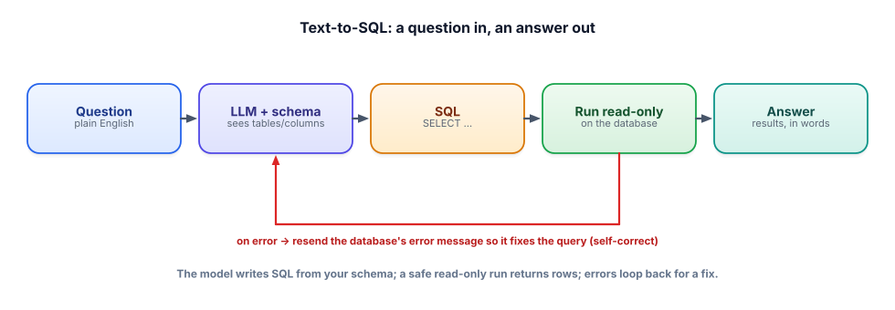

The self-correcting SQL agent
First tries fail: a wrong column name, a bad join, a dialect quirk. The trick that makes text-to-SQL feel reliable is letting the system read its own error and fix itself — the agent loop from Track 4, pointed at a database.
Why a single shot isn’t enough
Even with a good schema prompt, the model’s first query will sometimes fail: it references customer.country when the table is customers, or uses a function your dialect doesn’t have. A one-shot system just surfaces that error to the user, who has no idea what to do with no such column: customer.country. But notice: the database just told us exactly what’s wrong. If we hand that error message back to the model and ask it to try again, it fixes the mistake the overwhelming majority of the time. That single feedback loop is the difference between a brittle demo and something people trust.
This is precisely the agent loop (ReAct) from Track 4: act (run the SQL), observe (the result or the error), and decide (answer, or revise and retry). The tool here is your safe read-only query runner; the observation is either rows or an error string.

The loop, with guards
As with any agent (Track 4, and Track 11’s reliability patterns), the loop must be bounded: cap the retries so a query it can’t fix doesn’t spin forever or run up cost. Two or three attempts catches almost all recoverable errors; past that, fail gracefully and tell the user (or hand off to a human).
def answer_question(question, db_path, max_tries=3):
messages = build_prompt(question) # schema + question (Lesson 9.2)
for attempt in range(max_tries):
sql = llm(messages) # model writes a SELECT
try:
rows = run_readonly(sql, db_path) # safe runner (Lesson 9.3)
except Exception as err:
# hand the DB's own error back and let it fix the query
messages += f"\nThat query failed with: {err}\nFix it and return only SQL."
continue
return {"sql": sql, "rows": rows} # success — return SQL too, for transparency
return {"error": "Could not build a working query. Try rephrasing."}Three things make this good: the loop is bounded (max_tries), it feeds the actual error back (not a generic “try again”), and on success it returns the SQL alongside the rows so the answer is auditable. Everything dangerous is still contained by run_readonly from the last lesson — the agent can retry freely because it can’t do harm.
Beyond errors: verify the result, and ask when unsure
Self-correction fixes queries that error. But recall the scarier failure: SQL that runs and returns the wrong number. Two habits help. First, sanity-check the result shape — if a “how many customers” question returns 40,000 rows instead of one number, something’s off; that mismatch can itself be fed back for a fix. Second, when a question is genuinely ambiguous (“best customers”?), the most reliable “agent” move is often not to guess but to ask a clarifying question — “by revenue or by number of orders?” A system that occasionally asks is far more trustworthy than one that confidently guesses wrong.
- First-try SQL often fails; feeding the database’s error message back lets the model fix it — usually within one retry.
- This is the ReAct agent loop (Track 4): act (run) → observe (rows/error) → revise.
- Bound the retries (2–3) and fail gracefully — the safe read-only runner means retrying can’t cause harm.
- Return the SQL with the answer for transparency and auditing.
- Handle wrong-but-runs by checking result shape, and handle ambiguity by asking a clarifying question rather than guessing.
In the loop above, why do we pass the exact error string back to the model instead of a generic “that didn’t work, try again”? And why cap max_tries at a small number instead of looping until success?
▸ Show solution & reasoning
Exact error vs generic retry: the specific message localizes the fix. no such column: customer.country tells the model precisely what to change (the table is customers); near "GROUP": syntax error points at the clause to repair. A generic “try again” gives the model nothing new, so it’s likely to reproduce the same mistake — you’d be paying for another identical failure. Feeding back concrete observations is the core of what makes the agent loop work.
Why bound the retries: some questions can’t be answered from the schema (the data simply isn’t there), and without a cap the loop would retry forever, burning time and money on an impossible task — the runaway-agent failure from Track 11. A small cap catches the recoverable cases (the vast majority) and then fails gracefully with a helpful message, which is both cheaper and a better user experience than an infinite spinner. Bounded loops are non-negotiable in production.
A text-to-SQL system’s accuracy jumps sharply when one change is made. Which change, and why?
The self-correcting SQL agent is a specific case of a pattern worth internalizing, because it recurs everywhere in applied GenAI: give a model a tool whose failures are legible, let it call the tool, and feed the tool’s response — success or a precise error — back into the loop. SQL is a beautiful example because databases return unusually good error messages, but the same shape works for calling an API (feed back the 400 and the validation message), running code (feed back the stack trace), or invoking any function with a schema (feed back “missing required field X”). The model becomes reliable not because it’s always right the first time, but because the environment tells it exactly how it was wrong and it can try again.
That reframes what you’re building across this whole course. An agent’s intelligence is only half the story; the other half is the quality of the feedback its tools give it. When you design a tool for an LLM, you’re also designing its error messages — and a tool that fails with a clear, specific, actionable message turns a model that “sometimes gets it right” into a system that “gets it right after a bounded, self-correcting loop.” That design instinct — engineering the feedback, not just the action — is what separates people who can make agents production-grade from people who can only demo them.
You can now build a safe, self-correcting text-to-SQL system. The last question is the one interviewers always ask: how do you know it’s any good? Next: the interview check, where evaluation ties it together.